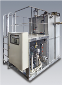
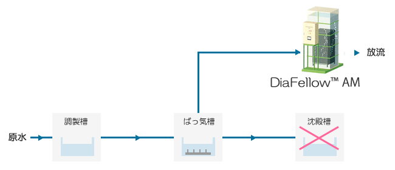

DiaFellow™ AMのメリット
1. 手軽に排水処理設備を導入できます。

DiaFellow™ AMは、膜分離槽、給水ポンプ、ばっ気ブロワー、各種バルブ、操作盤まで揃ったおオールインワン・パッケージ装置です。現地に固定して電源と配管を接続すれば運転可能です。
2. 効率的な膜分離活性汚泥法を採用しています。
膜分離活性汚泥法を採用したDiaFellow™ AMは、従来のシステム(標準活性汚泥法)と比べ、敷地面積、維持管理性、処理水質など様々な面で優れたメリットを提供します。
特徴
-
オールインワン標準設計・短納期
DiaFellow™ AMは、多彩な機能を標準装備。納期の短縮も実現しました。
-
幅広いオプション
薬液洗浄ユニット、原水ポンプ、増設タンクなどの追加機能で、個別ニーズに迅速に対応します。
-
処理水をリサイクル
0.4μmのマイクロボアによる処理水は清澄で、再利用も直接RO処理も可能です。
-
膜ユニットはステラポアー® SADF™を採用
小型でも大容量処理が可能な、高流量タイプの膜ユニットを使用しています。
-
容易な維持管理
ばっ気による洗浄効果アップと高フラックスで、安定運転を長時間持続できます。
-
高BOD対応
高濃度MLSSの運転により、高BODの原水への対応が容易です。
-
豊富なラインナップ
50m3/dayから2,000m3/day ※まで、多品種を用意。様々な処理水量に対応できます。
-
省エネルギー
低消費電力での造水を可能にしました。

仕様 »
装置仕様はこちらからご確認ください。